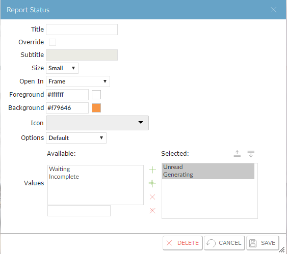

to display User Preferences.
to display User Preferences. .
. .
.If a
And you can add a tile from the History menu.
NOTE
to display User Preferences... to display User Preferences.This shows the tabs and sections that have already been set up.
.
You can have up to five tabs, and each tab can contain up to five sections.

NOTE
. to display User Preferences. and
and  buttons to rearrange the tabs or sections. You can also delete tabs or sections, or add standard menus..
to display User Preferences.
buttons to rearrange the tabs or sections. You can also delete tabs or sections, or add standard menus..
to display User Preferences.or:
 . To change an existing tile, click
. To change an existing tile, click  .
.

You can use the Row and Column fields to control how the tiles are laid out. If an item has a different Row code from the item before it, it will be displayed on a new row. Items that have the same Column code will be displayed in a single column.
.Press Ctrl+Shift and click the tile to display the Tile Maintenance frame.

.For each tile, you can specify the following:
|
Title |
The description to display on the tile. If blank, the tile shows the standard context description. |
|
Override |
Whether to override the subtitle of the tile. If this is not |
|
Subtitle |
The subtitle to display on the tile. If blank (and if Override is |
|
Size |
The size of the tile. Refer to the side-frame help for details. |
|
Open In |
How to open the function: in the main area (replacing the desktop), in a new window (or tab, depending on the |
|
Foreground |
The If this is blank, the text is black. |
|
Background |
The |
|
Icon |
The icon to display on the tile. If this is blank, the default icon, which is based on the category of the function, is shown on the tile. |
|
Options |
Additional options for the page that opens when the tile is clicked. These may be set up by your system administrator and will depend on the function that the tile runs. |
|
Values |
If the function has been written to allow data to be displayed on the tile, this allows you to select which data to show. |
to display User Preferences. .
. .
.
NOTE
 icon.
icon. next to the function you want to add to your desktop.
next to the function you want to add to your desktop.

.For details of how to configure the desktop for other users, see Configuring a User's Desktop .